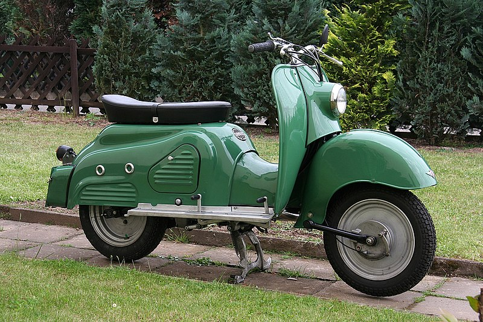

Motos
No século XIX, em 1820, o escocês Kirkpatrick McMillan obteve a tracção da roda traseira. Foi a partir dessa invenção que os ciclistas puderam movimentar-se sem colocar os pés no chão. Depois de muitos anos, em 1861, os franceses Pierre Michaux, um ferreiro, e seu filho Ernest Michaux, na época com apenas quatorze anos, construíram o velocípede, uma bicicleta com pedais (no formato da de McMillan) adaptados à roda dianteira, iniciando a produção para venda. Em 1866, Bin Chun chegou em Paris. O chinês, que já havia percorrido a Inglaterra e a Alemanha atrás de informações da bicicleta, levou suas anotações para casa e em apenas três décadas o veículo tornou-se a principal alternativa de transporte na China e na Índia. A partir disso, houve inovações como a do inglês James Starley. Batizada de Rover, essa bicicleta trazia rodas do mesmo diâmetro, chassi feito em tubos de aço, guiador integrado ao suporte da roda dianteira e os freios eram a tambor. Os pedais acoplados a uma engrenagem, movimentavam uma corrente de transmissão que gerava a força motriz da roda traseira.
Na versão norte-americana, o inventor foi Sylvester Howard Roper, nascido nos EUA. O estadunidense que viveu entre 1823 e 1896 desenvolveu um motor de cilindros a vapor (accionado por carvão) em 1867. Esta pode ser considerada a primeira moto, já que tratava-se de uma bicicleta, mas com motor a vapor. Roper criou um sistema de propulsão a vapor em 1869 e, embora muito perigoso, fez sucesso em suas exibições. Muito barulhenta e fedida, ela assustava os cidadãos da época, além do fato de espantar os cavalos que transportavam os poderosos de então. Em 1895, Roper desenvolveu uma versão aperfeiçoada da bicicleta a vapor. Na época, as motocicletas com motores a combustão estavam se tornando viáveis, e a experiência de mais de 30 anos credenciava Roper a fazer o mesmo com os propulsores a vapor. Foi quando o inventor apresentou um veículo melhor, com mais autonomia, reaproveitando o carvão em um compartimento fechado, que, ao mesmo tempo, reduzia o mau cheiro. Em 1º de junho de 1896, Roper decidiu que seu engenho estava pronto para ser exibido ao público.

A moto é composta por diversos dispositivos necessários para seu controle, geralmente com a seguinte configuração: Manetes de freio dianteiro (direta no guidão), manete de embreagem (esquerda no guidão), pedestal para freio traseiro (pé direito) e câmbio para troca de marchar (pé esquerdo), com exceção dos modelos CVT que trabalham com troca automática do câmbio, nesse caso possuem apenas acelerador e freio, sem comandos nos pés. Em ambas carregam tecnologias embarcadas como interruptores, lanternas, paralamas, painel, etc. O chassis, o qual pode ser simples, chassi duplo berço chassi multitubular, e suspensão traseira de diversos tipos como pró-link, monochoque, braço oscilante, geralmente de preferência a ser construído com aço ou alumínio, em casos mais raros em magnésio, carbono ou titânio. Rigidez e geometria do chassi é vital para a estabilidade. Normalmente, a rigidez necessária é em resposta a potência do motor e das características dinâmicas. Hoje todas as motocicletas são equipadas suspensões, a fim de manter as rodas em contato com o solo o maior tempo possível para a etapa de irregularidades, garantindo a estabilidade e aumento de conforto.